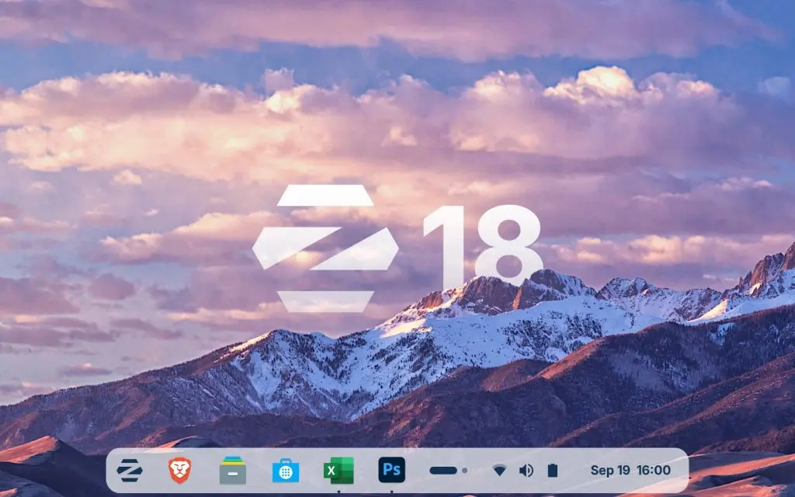
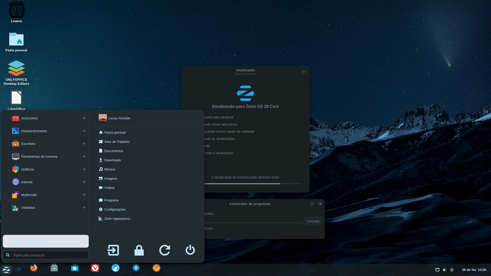

¿Qué es Zorin OS 18?
Zorin OS es una distribución diseñada para ser una alternativa directa a Windows y macOS. Ofrece una interfaz sumamente cuidada, moderna y con un alto nivel de compatibilidad con aplicaciones habituales de escritorio.
Características y Requisitos de Zorin OS 18
Puntos clave de Zorin OS 18:
- Zorin Appearance: Permite cambiar el aspecto del sistema para que se parezca a Windows 11, Windows Clásico o macOS con un solo clic.
- Zorin Connect: Integración fluida entre el teléfono inteligente y la computadora para ver notificaciones y enviar archivos.
- Soporte de Apps: Excelente soporte inmediato para aplicaciones de Windows mediante la capa de compatibilidad integrada.
- Zorin OS 18 Core: Incluye el entorno principal basado en GNOME con efectos visuales, dock interactivo y layouts de Windows 11 o macOS.
- Zorin OS 18 Lite: Diseñado con el entorno XFCE para computadoras de 2 núcleos o menos de 4 GB de RAM.
Requisitos de Sistema Recomendados
| Componente | Requisito Mínimo | Requisito Recomendado |
|---|---|---|
| Memoria RAM | 2 GB (Lite) / 4 GB (Core) | 8 GB |
| Espacio en Disco | 15 GB | 40 GB |
| Procesador | 1 GHz Dual Core | 2 GHz Quad Core |
Multimedia

